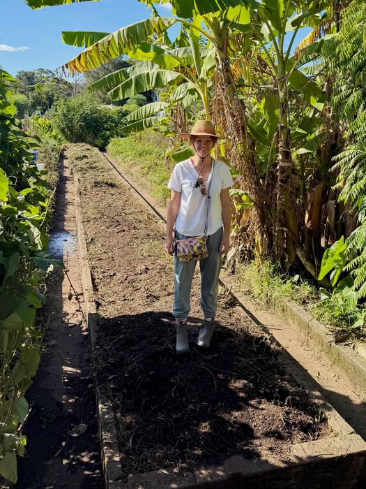
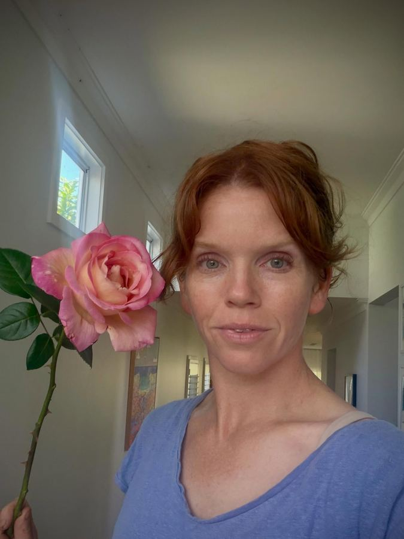

The story
A trampoline, a backyard, and a lot of sweet peas.
When a media redundancy opened the door, Angie Thompson turned her Thirroul backyard on Wrexham Road, trampoline and all, into a small cut-flower farm on Dharawal Country.
Everything is grown small-scale and by hand: no plastics, no pesticides, just whatever the season and the coastal weather let through. Bunches are picked the day you collect them.
Grown by Angie Thompson, Thirroul